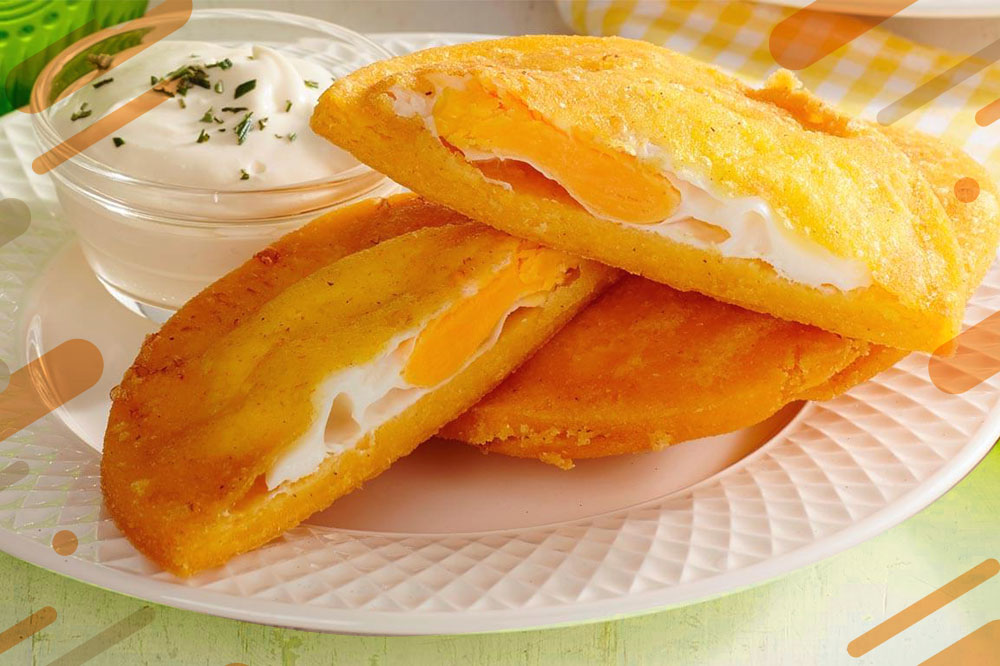

Trufas De Chocolate

Las trufas de chocolate son pequeños bocados de placer, con una textura suave y aterciopelada que se funde en la boca. Su exterior cubierto de cacao, frutos secos o chocolate derretido es solo la antesala de un corazón cremoso e intenso, donde el chocolate puro se mezcla con la mantequilla y la nata para crear una experiencia irresistible.
Arroz Paisa

El arroz paisa es un festín de sabores y tradición, un plato vibrante que reúne lo mejor de la cocina colombiana en cada bocado. Su base de arroz suelto y dorado se impregna con el sabor ahumado del chorizo, la suavidad del pollo desmechado y la intensidad de la carne de cerdo, todo sazonado con especias que despiertan los sentidos..
Arepas De Huevo

La arepa de huevo es una joya crujiente de la gastronomía colombiana, un bocado dorado y lleno de sabor que conquista desde el primer mordisco. Su exterior es una capa de maíz frito, crujiente por fuera y ligeramente esponjosa por dentro, que envuelve con cariño un huevo suave y jugoso que se desborda de sabor al romperse..